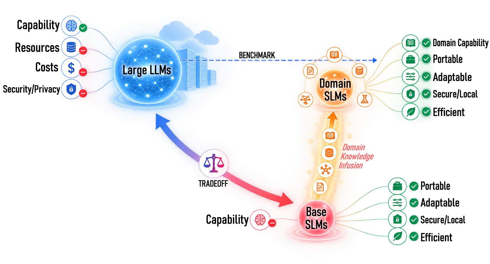

From Water Systems
to Decarbonization,
powered by Domain AI
Compact domain AI for water and wastewater research, from expert knowledge assessment to domain-informed analysis and agentic research workflows.

One Platform, Multiple Levels of Domain Intelligence
The platform connects expert benchmarking, specialized language models, publication intelligence, and agentic workflows rather than treating AI as a single black-box chatbot.
Expert MCQA Benchmark
Evaluate domain knowledge using curated expert-level questions spanning water sustainability and decarbonization.
Domain-Adapted SLMs
Explore compact open-source models adapted to water-sector knowledge for portable and affordable deployment.
Chat [Experimental Purpose]
Move beyond multiple-choice testing toward open-ended technical dialogue with domain-adapted language models.
Research Agent [Experimental Purpose]
Extend domain models from language generation to tool use, code execution, and MCP-enabled research workflows.
Knowledge → Model → Literature → Action
WaterScope-AI is evolving from a model demonstration into a domain AI platform linking domain knowledge, compact models, publication intelligence, and tool-enabled research workflows.
MCP-enabled action
Quick Start
Benchmark Domain Knowledge
Start with expert MCQA to compare domain-adapted models on water sustainability questions.
Interact with Domain AI
Use the chat interface to explore more open-ended technical questions and model behavior.
Explore Research Agent
Explore how domain models can move beyond direct responses toward tool use, code, and MCP-enabled research workflows.